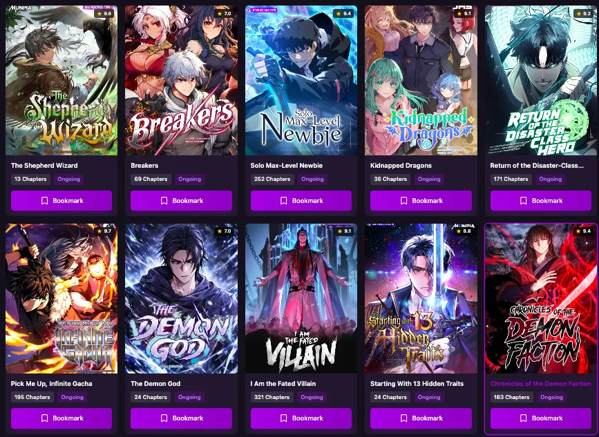
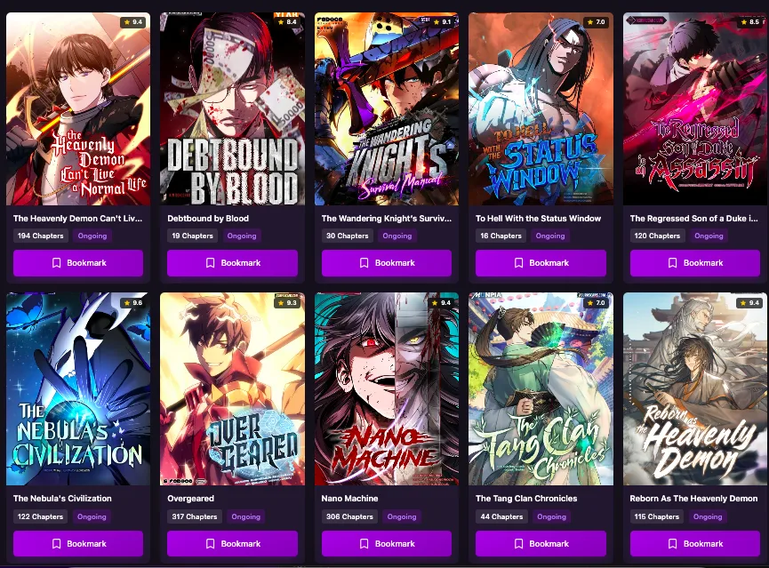

Vérifiez son statut, résolvez les problèmes d’accès courants, évitez les faux sites miroirs et trouvez des alternatives plus sûres.
Si vous essayez d’ouvrir scan-manga.com, l’échec de la connexion peut avoir plusieurs causes : panne de serveur, changement de domaine, restriction DNS ou du fournisseur d’accès, blocage régional, problème de cache du navigateur ou fermeture définitive.
Scan-Manga était associé à la lecture de mangas et de manhwas en français. Des rapports historiques font état de problèmes de domaine et d’accès, tandis que des services tiers de disponibilité ont parfois signalé le domaine comme inaccessible. Avant de faire confiance à un « nouveau lien Scan-Manga », vérifiez la situation et protégez-vous des sites clones.

Il n’existe pas une seule explication valable pour tous les visiteurs. Comparez le problème rencontré avec ces causes fréquentes :
| Cause possible | Signe courant | Que faire |
|---|---|---|
| Panne de serveur | Délai dépassé, page blanche, erreurs 502 ou 503 | Patientez et réessayez plus tard. |
| Problème de domaine | « Site introuvable », redirections inattendues ou anciens favoris inactifs | Ne faites pas confiance à un nouveau domaine sans vérification. |
| Blocage DNS ou FAI | Le site fonctionne en données mobiles, mais pas sur le Wi-Fi domestique | Essayez un autre réseau ou fournisseur DNS. |
| Restriction régionale | Le site fonctionne dans un autre pays, mais pas dans le vôtre | Comparez l’accès depuis différents réseaux ou lieux. |
| Conflit de navigateur ou d’extension | Le site échoue dans un seul navigateur | Utilisez la navigation privée, videz le cache et désactivez les extensions. |
| Faux site miroir | Pop-ups, téléchargements APK ou demandes de paiement | Quittez immédiatement le site. |
Une page blanche ne prouve pas à elle seule une fermeture définitive. Une panne prolongée sur plusieurs réseaux indique généralement un problème du côté du site.

Effectuez ces vérifications dans l’ordre pour identifier la cause en toute sécurité.
Alternez entre le Wi-Fi et les données mobiles. Si le site échoue sur une seule connexion, votre FAI ou vos paramètres DNS peuvent être en cause.
Ouvrez une fenêtre privée. Si le site fonctionne, effacez son cache et ses cookies, puis désactivez un à un les bloqueurs de publicité, outils de confidentialité ou extensions VPN.
Utilisez un service tiers de disponibilité réputé pour savoir si le domaine est également inaccessible aux autres visiteurs.
Essayez Cloudflare (1.1.1.1), Quad9 (9.9.9.9) ou Google Public DNS (8.8.8.8), puis redémarrez le navigateur ou videz le cache DNS.
Un lien enregistré peut pointer vers une adresse obsolète. Vérifiez tout domaine de remplacement auprès d’un canal officiel fiable avant de le visiter.
Recherchez le titre original du manga, son auteur et son éditeur, puis consultez les services officiels ou sous licence disponibles dans votre région.
| Plateforme | Idéale pour | À savoir |
|---|---|---|
| Manga Plus | Les mangas japonais publiés officiellement | Le catalogue varie selon les pays. |
| WEBTOON | Les webtoons et bandes dessinées numériques sous licence | Une option solide pour les lecteurs de webtoons. |
| MangaDex | Découvrir des mangas et bandes dessinées sur une plateforme communautaire | Les séries et langues disponibles varient. |
| Applications et sites des éditeurs | Les éditions françaises, anglaises ou régionales | Souvent la meilleure source pour les éditions localisées officielles. |
Si vous lisez en français, consultez les éditeurs français officiels, les services de simulpublication sous licence et les applications régionales de manga. La disponibilité dépend des droits de distribution en France, en Belgique, au Canada et dans les autres marchés francophones.
Aucune déclaration publique claire et officielle ne confirme une fermeture définitive. Si le domaine reste inaccessible pendant une longue période sur plusieurs appareils, navigateurs et réseaux, il peut s’agir d’une panne prolongée, d’une migration d’infrastructure ou d’un arrêt du service.
Ne considérez pas un domaine comme officiel simplement parce que son nom contient « scan-manga ». Un domaine de remplacement ne doit être considéré comme officiel que s’il est annoncé par un canal officiel vérifiable.
Un VPN peut aider à déterminer si le problème est lié à votre pays, votre fournisseur d’accès ou la route DNS. Il ne peut pas réparer un serveur arrêté, un domaine expiré ou un site qui n’est plus maintenu.
Installez uniquement des applications provenant du Google Play Store, de l’Apple App Store ou d’un éditeur officiel vérifié. Évitez les fichiers APK, les boutiques non officielles, les extensions de navigateur et les liens diffusés dans des pop-ups ou des commentaires.
La différence peut venir du filtrage du fournisseur d’accès, de la résolution DNS, du cache du navigateur, de restrictions régionales ou d’un problème temporaire de routage. Tester un autre réseau et une fenêtre de navigation privée est le moyen le plus rapide d’identifier la cause.